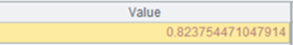
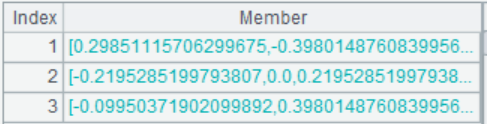

Description:
Send a query request to the web service server to get the returned data.
Syntax:
ws_call(client,[service_name:service_port:]operation_name[,value1:paramName1,value2:paramName2…])
Note:
This external library function sends a query request to the web service server to get the returned data.
Parameters:
|
client |
Web service client object |
|
service_name |
Service name; the parameter can be omitted when the WSDL URL contains only one service |
|
service_port |
Service port; the parameter can be omitted when the specified service has only one port |
|
operation_name |
Query operation name |
|
value: paramName |
Parameter value&Parameter name; multiple pairs are allowed. If the name part is omitted, names defined in WDSL message will be referenced in order |
Return value:
A sequence
Example:
|
|
A |
|
|
1 |
=ws_client("http://www.webxml.com.cn/WebServices/WeatherWebService.asmx?wsdl") |
Access the weather forcast server |
|
2 |
=ws_call(A1,"WeatherWebService":"WeatherWebServiceSoap":"getSupportProvince") |
 |
|
3 |
=ws_call(A1,"WeatherWebService":"WeatherWebServiceSoap":"getWeatherbyCityName","58367":"theCityName")
|
|